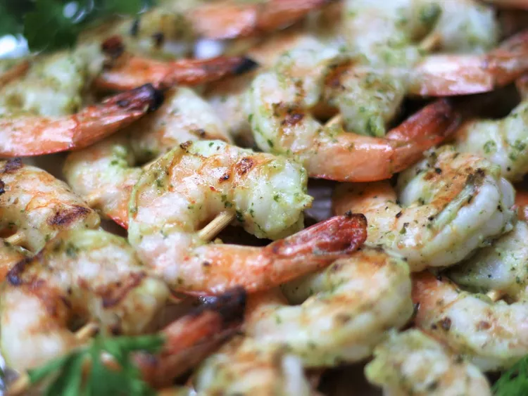

Grilled Garlic Shrimp

Appetizing Grilled Shrimp...
These grilled shrimp receive a double dose of garlic flavor - fresh garlic and garlic salt. Try not to marinate longer than 30 minutes, as the acid from the lemon juice will start to break down the delicate shrimp meat and make it mushy. Extra large shrimp come 26 to 30 shrimp per pound.
Ingredients
- 3 tablespoons olive oil
- 1 tablespoon lemon juice
- 3 cloves garlic, minced
- 1 tablespoon minced fresh parsley
- 1 tablespoon minced fresh basil
- ½ teaspoon garlic salt
- ⅛ teaspoon freshly ground black pepper
- 1 pound extra large shrimp, peeled and deveined
- 6 wooden skewers
Step 1
- Combine oil, lemon juice, garlic cloves, parsley, basil, garlic, salt, and pepper in the bowl of a food processor. Blend until marinade is smooth, about 20 seconds.
Step 2
- Pour marinade into a resealable gallon-sized plastic bag. Add shrimp to the bag and toss to coat with the marinade. Seal bag and chill in the refrigerator for 30 minutes.
Step 3
- Soak wooden skewers in cold water while shrimp is marinating.
Step 4
- Preheat an outdoor grill for high heat and lightly oil the grate.
Step 5
- Remove shrimp from marinade and thread onto skewers, 5 to 6 shrimp per skewer. Cook the shrimp on the preheated grill until they are bright pink on the outside and no longer transparent in the center, about 3 minutes per side.